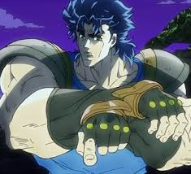

Jonathan Joestar |
Joseph Joestar |
Jotaro Kujo |
Gorino Giovanna |
Sub Vs Dub |
JoJo Memes
Jonathan Joestar

Jonathan Joestar is the first protaganist to make an apperance on the show.
Til one day he is met with a feirce rival who has no good intentions for future events his name is Dio Brando.
So to stop Dio, Jonathan has to learn and master the ability to use this power known as Hamon.
Soundtracts
Sono Chi no Sadame